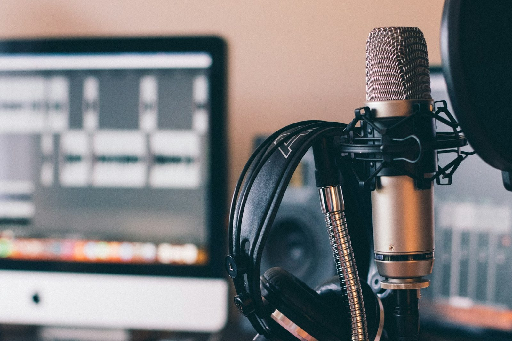
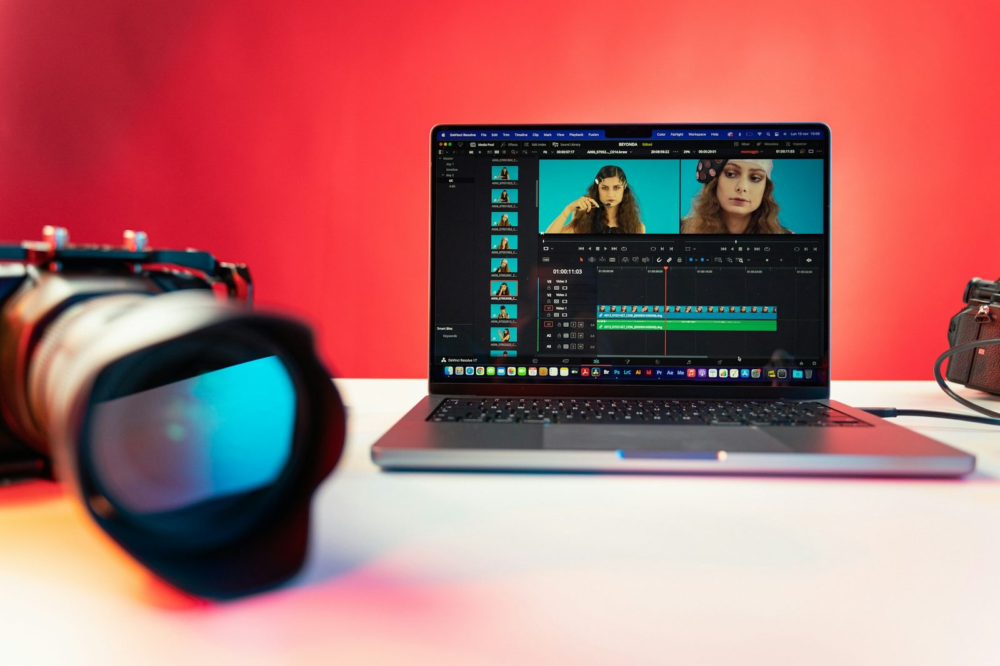
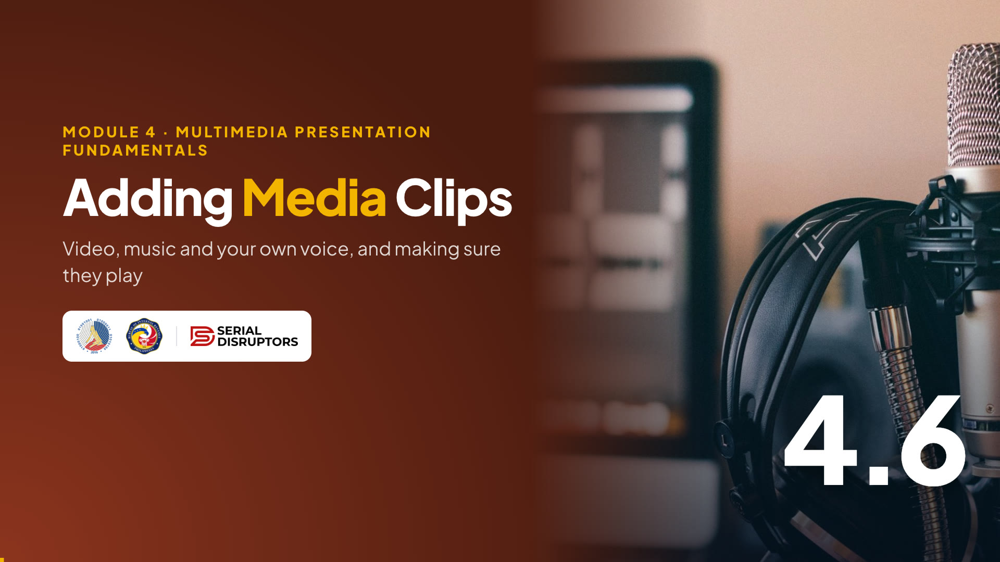

Module 4 · Multimedia Presentation Fundamentals
Video, music and your own voice in a slide, and making sure they actually play on the day.

Maayong hapon po! Our slides now have text, pictures, a chart and smooth transitions. Today we add sound and video.
Media is powerful: a 30-second clip can explain what three slides of text can't. But media is also the number one cause of "wait lang po, ayaw mag-play" moments.
So we'll learn both: how to insert and trim clips, and how to test them so they play on the office PC and over Zoom or Meet.
Warm-up · type in the chat
"This video is unavailable" in the middle of a talk
The video plays, but nobody online hears it
The file is too big to email or upload
Loud music that drowned out the speaker
Ask them to type A, B, C or D. Many will pick B: over Zoom or Meet, sound is the most common failure.
Share a quick story if you have one, for example a seminar where the video only showed a black box.
Then reassure them: each fail on this slide has a simple fix, and by the end of this topic we'll have covered all four.
By the end of this topic
From a file or online; background music or narration.
Keep only the part you need; choose how and when it plays.
Embed or link wisely, test on the real setup, and respect copyright.
Three goals: insert, control, prepare. Most tutorials stop at "insert". The other two are what separate a smooth presentation from an awkward one.
Mention the Lab 4 link: the syllabus describes the presentation output as showing consistent design, clear text, embedded media and transitions. Your Lab 3 chart or Lab 1 image counts as media; a short clip or narration is a bonus that makes your deck stand out.
The big idea
Everyone has been to a barangay or church program with a dance or song number in the middle. When it works, it's the best part. When the sound system fails, everyone waits awkwardly.
A media clip in your slides is the same. Four jobs: book it, rehearse it, check the sound, get permission. We'll do each one today, in that order.
What you can add
A clip saved on your computer, e.g. a 20-second phone video of the new filing room.
A YouTube video played inside the slide. Needs internet while presenting.
Soft music under a photo slideshow. Keep it quiet and short.
Your own recorded voice explaining a slide, for decks people watch on their own.
Four kinds. A video file lives on your computer. An online video stays on YouTube and streams when you play it. Background music plays under other slides. Narration is your voice recorded for a self-running deck.
Stress the tip: media should earn its place. A 20-second clip showing how to use a scanner beats two slides of steps. Random music because "it's nicer" usually doesn't help.
Inserting video
PowerPoint for Microsoft 365. Older versions word it slightly differently.
| Google Slides | Insert › Video: search YouTube, paste a URL, or pick a file from Google Drive. |
|---|---|
| LibreOffice Impress | Insert › Audio or Video: files on your computer only. |
Demo in PowerPoint: Insert › Video › This Device, then show Online Videos and paste a YouTube link.
The trade-off is simple. A file is reliable but heavy. An online video is light but depends on the internet, and on the owner keeping it public. That's where "This video is unavailable" comes from.
For a training room with unstable Wi-Fi, use a file. For a deck you'll email, an online link keeps it small.
Inserting audio
Play in Background is the one-click setting for music: it starts automatically, plays across slides, loops, and hides the speaker icon during the show.
For narration, show Record Audio live. A headset mic gives much cleaner sound than a laptop mic.
Warn about volume: background music should sit under your voice. If you'll speak live, you may not need music at all.
Rehearse it · keep only what you need
Google Slides: Format options › Video playback › Start at / End at. Impress has no trim: cut the file first, e.g. in Clipchamp on Windows 11.
Trimming doesn't cut the original file; PowerPoint just plays the part you choose. That's great because you can widen it again later.
Demo: open Trim Video, drag the green marker to where the useful part starts and the red marker to where it ends. The window shows a 30-second piece of a longer clip.
Note that trimming in PowerPoint doesn't make the file smaller by itself. To actually shrink it, we'll use Compress Media in a moment.
Playback options
| Setting | Use it when… |
|---|---|
| Start: In Click Sequence / When Clicked On | You present live and want to choose the moment. Safest choice. |
| Start: Automatically | The clip should begin as soon as the slide appears, e.g. a kiosk loop. |
| Play Full Screen · Loop · Rewind | Fill the screen for a short demo · repeat for a lobby display · reset to the start after playing. |
Click the video, open the Playback tab, and walk through the settings left to right.
For a live talk, choose When Clicked On or In Click Sequence: the clip waits for you. Automatically suits a self-running slideshow, like a birthday loop or a lobby display.
Google Slides has similar choices: Play (on click), Play (automatically) or Play (manual), plus Mute, under Format options.
Try it now · your Lab 4 file
Record 10 seconds of your desk or workspace with your phone, copy it to the PC, then Insert › Video › This Device.
Insert › Video › Online Videos and paste a YouTube link from this course, e.g. a GCFLearnFree tutorial.
Insert › Audio › Record Audio. Say one sentence: "The skill I'll use most at work is…"
Start the 6-minute timer. Everyone chooses one path.
The voice option is the fastest and needs no internet; suggest it to anyone on a slow connection. A headset or phone earphones with a mic sound better than the laptop mic.
When time is up, ask for a 👍 reaction from everyone whose clip played in Slide Show. Help anyone with a 👎 now, before we talk about sharing sound online.

File size
| Embedded (default) | Linked | |
|---|---|---|
| Where | Inside the .pptx | A separate file beside it |
| Size | Bigger deck | Smaller deck |
| Risk | Too big to email | Breaks if the file moves |
When you insert from This Device, PowerPoint embeds the clip: it's stored inside the .pptx. Phone videos are large, so a deck can quickly pass 100 MB.
Demo File › Info › Compress Media. 720p looks fine on a projector or Zoom share.
Linking (the small arrow on the Insert button, then Insert and Link) keeps the deck light, but if you copy only the .pptx to a flash drive, the video won't come along. Copy the whole folder.
Media with a purpose
Read two examples from each side. At the office, the best clips are short how-to recordings: they save you from answering the same question ten times.
Spend a moment on the warning. A video of the front desk might show a taxpayer's face or a TIN on a form. That's personal information under the Data Privacy Act. Film empty rooms, your own screen with sample data, or ask consent.
Check the sound system
This is the "sound system check" from our barangay program analogy, and the fix for fail B in the warm-up.
Show Zoom's share window now and point to Share sound at the bottom. Without it, you hear the video and your audience hears silence.
Always test on the actual computer: a newer PowerPoint on your laptop may play a clip that an older office PC can't. And keep a Plan B; brownouts and slow internet happen.
Try it now · together
Ask for two volunteers who finished the previous Try it. Run the test twice on purpose: once without sound sharing, once with it.
Hearing the difference themselves is far more memorable than me saying "tick the box." Let the audience give feedback with reactions and the chat, so the speakers stay clear.
If no one volunteers, do it yourself with a short clip from your own deck.
Get permission
This is the ethics part of Lab 4: "Multimedia Presentation and Ethical Design".
Popular songs are copyrighted, even if you give credit. For a government office deck, the safest music is no music, or stock audio with a clear licence.
Playing a YouTube video through its own player is the normal way to share it. Downloading it to embed as a file is different; YouTube's terms don't allow that without permission. And for people in your clips: ask consent.
Myth or fact? · click a card to flip
Credit doesn't equal permission. You need a licence, or music that is free to use.
Linked files, older app versions, missing internet or speakers can all stop it. Test on the real setup.
Attention drops fast. 15 to 60 seconds that make one point beats a full 5-minute video.
Ask the group to vote M or F in the chat for each card, then flip it.
The first one surprises many people: giving credit is polite, but it doesn't give you the right to use the song.
The second one ties back to testing. The third is our trimming rule: play only the part that makes your point.
Optional extra
This is optional, for those who want to go further. A narrated deck exported as a video is great for people who missed a meeting.
Demo the Record button if time allows; it records your voice slide by slide, and you can redo just one slide.
The tip matters: a screen recording captures everything, including a Messenger pop-up from your family group chat. Turn on Do Not Disturb, and show only sample data, never a real taxpayer record.
Watch · 5 minutes
A barangay program, a scanner how-to and Lola's birthday slideshow: see how to insert video and audio, trim and set playback, keep the file small, test the sound online and use only media you're allowed to use.

4:53Introduce the video in one or two sentences, then read the While watching task aloud so everyone knows what to look for.
Press → to open the video full screen. In Zoom or Meet, share this tab with computer sound turned on.
Space or K plays and pauses (or click the video). C turns captions on or off; the speed button offers 1.25× and 0.85×. The arrows still move between slides, and the video pauses when you leave this slide.
Length 4:53. Pause anywhere to take a question; captions stay on screen for anyone without sound.
After the video, go back to the While watching task: ask two or three people for their answers.
Quick check · click an answer
Let them type A to D first, then click to reveal. The answer is B.
Ask: "What's the Google Meet version of this fix?" Answer: present a Chrome tab, or tick share system audio when sharing the whole screen on Windows.
If anyone picked A, remind them that Compress Media is about file size for emailing and uploading. Sound sharing is a meeting setting, not a slide setting.
Recap · Topic 4.6
File for reliability, online for small size. Music in the background, narration for self-running decks.
Trim to the part that matters; start When Clicked On; compress before you share.
Test on the real PC and with "Share sound". Use media you may use, with consent.
Next · 4.7 AI in Presentation Design, then the Lab 4 brief and our course closing.
Summarize with the barangay program: book it, rehearse it, check the sound system, get permission.
Quick chat check: "Type 1 if your Lab 4 deck now has at least one image, chart or clip." Anyone without one can add the Lab 3 chart during the lab.
Bridge to 4.7: "Our last topic: letting AI suggest layouts and outlines, while we stay in charge of the facts."